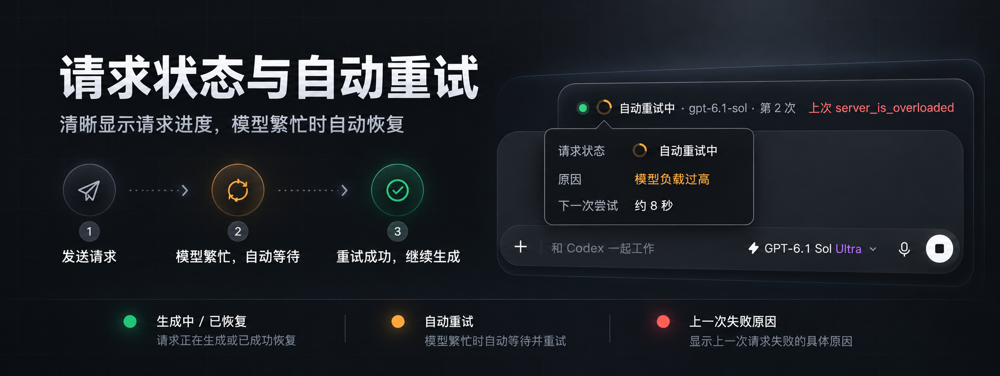
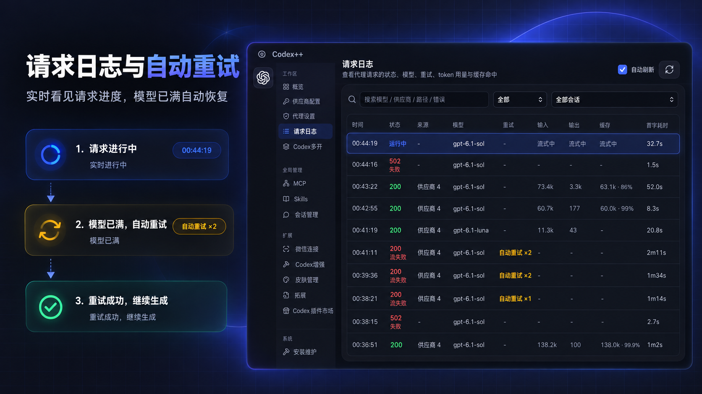
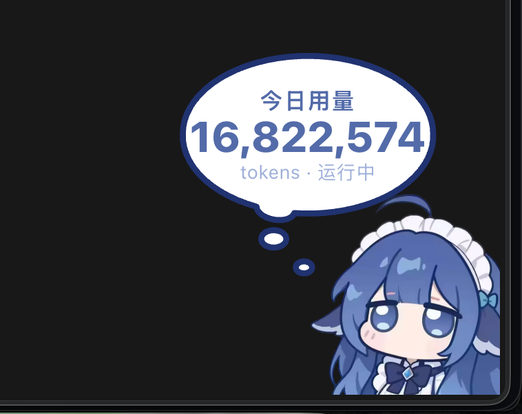

Switch providers freely
Official sign-in, official + API, API-only, and aggregates. Failover switches members on errors; model aggregation pins models to members. Responses / Chat Completions conversion, model tests and Provider Doctor included.
YOUR CODEX, UPGRADED — OPEN SOURCE · LOCAL · RUST + TAURI
Manage providers and models in one place, make conversations easier to use,
and shape your workspace around you. No app.asar patches, nothing written into install dirs.
LIVE DEMO · TYPING EFFECTS
Not a video — the real particle engine shipped in Codex++, running on your screen right now. Type something.
FEATURES · THE MATRIX
Every enhancement has its own switch; with the master switch off, provider and launch management keep working.
Official sign-in, official + API, API-only, and aggregates. Failover switches members on errors; model aggregation pins models to members. Responses / Chat Completions conversion, model tests and Provider Doctor included.
Set context windows and compaction thresholds per model. Codex++ generates a dedicated model_catalog_json so Codex reads each model's window. Import model metadata; pick MCP, skills and plugins per provider.
Local session scanning, delete with undo, batch management, Markdown export, token history, project moves and thread IDs.
Browse community user scripts for model selectors, usage stats and more. Manage MCP servers, skills and Codex plugins, or hot-reload your own scripts.
Voice input, paste fixes, conversation width, scroll restoration, next-step suggestions, answer outlines — and the typing effects you just tried.
Launch isolated Codex instances per provider identity: separate config, sessions and data directories, running side by side, each restartable on its own.
Live generation speed, cache hit rate and context usage below the composer, read from local Codex session records with matching definitions. On by default.
Usage widgets and desktop pets: token stats, task status and budget alerts. Drag, resize, reskin, or bring your own character art.
Scan a QR code to reach your local Codex. Each contact maps to an isolated session, with an allow-list of WeChat users. Hand off work from anywhere.
Ask your current Codex chat to delegate to DeepSeek Harness (dsh), Claude Code or another Codex. The selected CLI runs the task and returns results to the same chat. Configure the default agent, CLI paths and models; naming an agent selects that target.
Restore the native Fast switch in API-only mode and use Codex's own Standard / ⚡ Fast controls. Off by default; the model must declare Fast (priority) support. Availability and billing depend on your provider.
Absorb model capacity/overload errors (server_overloaded, server_is_overloaded, at capacity) at the proxy with backoff retries so Codex sessions are interrupted less often. The status line shows the request phase, model, elapsed time, retry count and last failure reason; streaming mode keeps live output while buffered mode absorbs overloads at any point.
PROVIDER MODES
Each mode is configured independently and switches in one click — the current profile is saved before the target one is written.
Use your ChatGPT / Codex account. Requests go through the official channel with the full official experience and plugin entry.
SHOWCASE · REAL UI
Real Codex++ UI and feature graphics. Select a thumbnail to preview; click the large image to view it full size.







PER-MODEL CONTEXT
Write a window suffix in the model list and Codex++ generates a dedicated model_catalog_json so Codex uses the right window per model. Models without a suffix keep provider-level settings.
# Write window suffixes right in the model list
deepseek-v4-pro[1M]
claude-opus-5.5[200K]
your-model[128000]
# Codex++ generates model_catalog_json
# codex reads each model's own window ↓GETTING STARTED
Codex++ works alongside the official Codex / ChatGPT desktop app — install that first.
From GitHub Releases: Windows picks *-windows-x64-setup.exe, macOS (Apple Silicon / Intel) picks *-macos-universal.dmg — drag it into Applications.
Double-click always opens the manager: confirm the official app path, pick a provider mode, toggle enhancements, save. API keys stay on your machine.
Hit "Launch" to load your saved provider and enhancement config into the official app. Injection-based settings apply after a Codex restart.
Every enhancement can be toggled individually; with the master switch off, provider and launch management keep working.
CHANGELOG
Highlights from the latest releases — see the repo CHANGELOG and Releases for the full log.
FAQ
Make sure you launched the official app from the Codex++ manager with the "Launch" button. Check the app path, launch status and diagnostic logs in the manager's Maintenance and About pages.
Run a model test or Provider Doctor in the provider details first: verify protocol, Base URL, key and model. API-only and official+API modes store credentials differently — don't hand-copy auth.json between them.
Confirm that you saved and restarted Codex through Codex++. In your provider's model settings, set “Fast (priority) support”, then save both the model and provider before restarting. Only declare support that your provider actually offers; unlocking the client control does not change service limits or billing.
Yes — individually or via the master switch. Codex++ depends on the official app's page structure, CDP and local data formats, so some features may need follow-up adaptations after official updates. Back up before changing provider settings or session data.
CODEX_HOME wins when set; otherwise ~/.codex. API keys never leave your machine — redact secrets before submitting feedback.
COMMUNITY & SUPPORT
Open an issue with your OS, Codex++ version, repro steps and redacted logs. Extensions, themes and tips are always welcome.
Refer to each provider's official website for services, prices and offers.
Want to support the project or show your brand? Contact the maintainer.
Free & open source · AGPL-3.0 · Windows and macOS
Your config and sessions never leave your machine.
Works with the official Codex / ChatGPT desktop app. Open Codex++, configure a provider, and hit "Launch" in the manager.